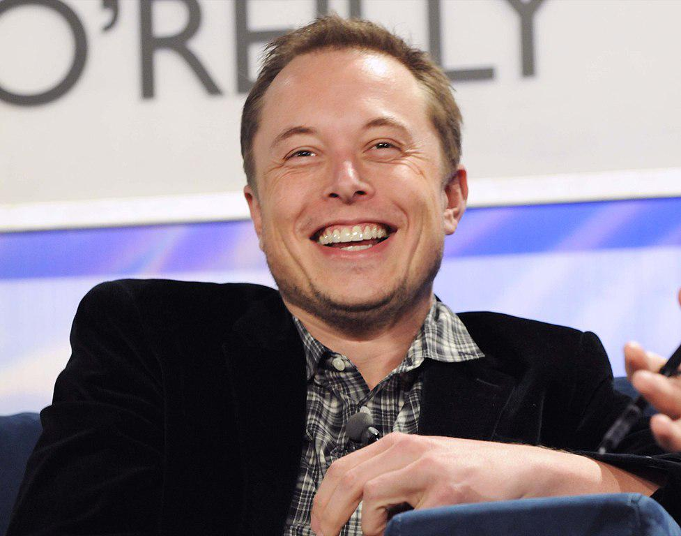

Elon Musk revela em quais criptomoedas está investindo atualmente
Neste ano, o CEO da Tesla e CTO da SpaceX, Elon Musk, repercutiu diversas vezes nas redes sociais, com destaque ao Twitter, por conta de seus infames comentários acerca de criptomoedas. Costumeiramente, as publicações do empresário eram ambíguas e causavam uma repentina volatilidade no preço de diversos ativos digitais, graças ao enorme impacto de sua influência.
Na última ocasião, porém, Musk foi mais incisivo em suas opiniões sobre o mercado de criptomoedas e chegou a compartilhar detalhes sobre seus ativos digitais preferidos: o executivo revelou em quais moedas está investindo atualmente. A discussão começou no Twitter, quando um usuário perguntou o quanto ele havia investido em shiba inu (SHIB), uma moeda-meme semelhante ao conhecido dogecoin (DOGE).
Sucinto, Musk respondeu em um tweet: “Nada”. Embora diga muito com apenas uma palavra, seus seguidores não ficaram satisfeitos com a publicação e questionaram se ele, similarmente, havia investido na criptomoeda floki (FLOKI) — outra moeda-meme, desta vez batizada em homenagem ao cão de estimação do CEO.

Curiosidades
Elon Musk: 5 curiosidades sobre o bilionário da Tesla

Em quais criptomoedas Elon Musk investiu?
Em detalhes, Musk afirmou que possui investimentos em bitcoin (BTC), ethereum (ETH) e dogecoin (DOGE) por “curiosidade” e aproveitou para complementar: “não arrisque tudo em criptomoedas! O verdadeiro valor é construir produtos e fornecer serviços aos outros seres humanos, não dinheiro em qualquer forma”. Considerando a distinta natureza dessas criptomoedas, a presença da moeda-meme na carteira de investimentos de Musk pode causar estranhamento em alguns internautas, porém, não é uma novidade.
O CEO já comentou repetidas vezes sobre “estar trabalhando” com os desenvolvedores da Dogecoin, contudo, só esclareceu seu interesse no ativo digital no último domingo (24): “muitas pessoas com quem conversei nas linhas de produção da Tesla ou construindo foguetes da SpaceX possuem DOGE,” contextualiza, “eles não são especialistas em finanças ou tecnólogos do Vale do Silício. É por isso que decidi apoiar DOGE — parecia a criptomoeda do povo”, conclui Musk..
Apesar de ser um grande apoiador da moeda dogecoin, Elon Musk causou uma queda histórica no ativo quando participou do programa de humor SNL e fez piadas com o ativo baseado em um meme. Por outro lado, o empresário também anunciou uma missão lunar da SpaceX que foi paga com o token.
Especulação POP
Sem surpresas, os comentários de Musk sobre criptomoedas refletiram no preço dos ativos, com destaque para a volatilidade da SHIB. Logo após a publicação do tweet, o preço da moeda-meme caiu 26,5% em relação ao seu topo mais recente. A DOGE, por outro lado, viu uma valorização de 11,6% e alcançou os US$ 0,28 antes de encarar uma nova correção.